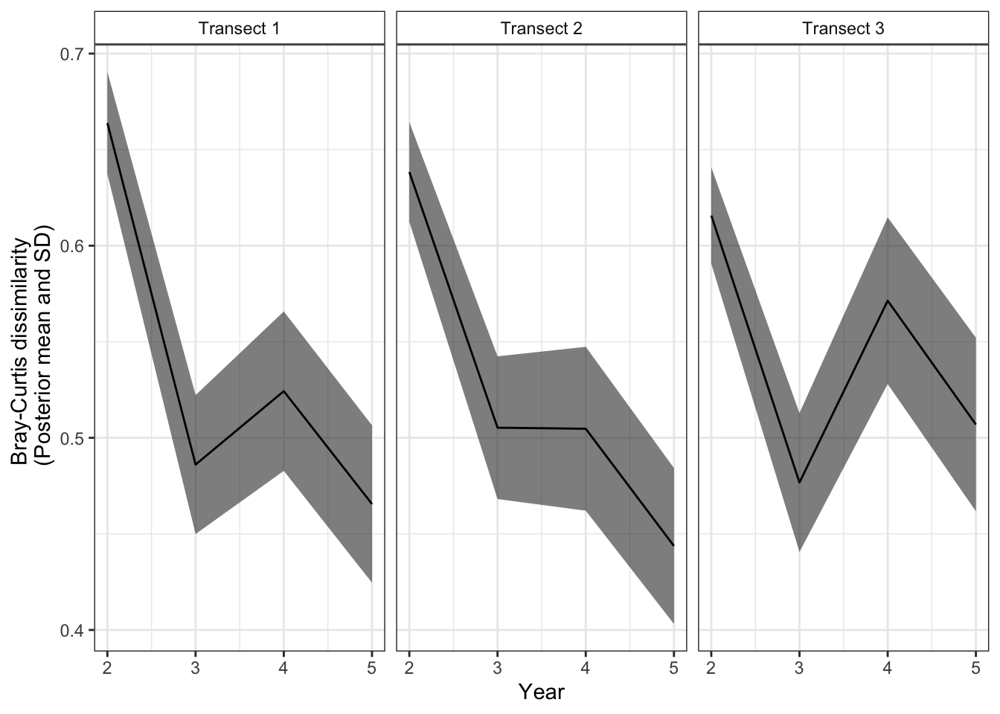

model{
#...
#This is all the model code that we provided in the
# "Accounting for Imperfect Detection" tab, so we do not provide it here,
#for brevity.
#DERIVED QUANTIIES
#Bray-Curtis dissimilarity
for(t in 1:n.transects){
for(y in (n.start[t]+1):n.end[t]){
for(s in 1:n.species){
# num individuals in both time periods per species
a[s,t,y] <- min(N[s,t,y-1], N[s,t,y])
# num individuals only in first time point
b[s,t,y] <- N[s,t,y-1] - a[s,t,y]
# num individuals only in second time point
c[s,t,y] <- N[s,t,y] - a[s,t,y]
}
#for all years 2 onward:
#total number of shared individuals across time periods
A[t,y] <- sum(a[,t,y])
#total number of individuals in only first time period
B[t,y] <- sum(b[,t,y])
#total number of individuals in only second time period
C[t,y] <- sum(c[,t,y])
#total bray-curtis (B+C)/(2A+B+C)
num[t,y] <- B[t,y] + C[t,y]
denom1[t,y] <- 2*A[t,y]+B[t,y]+C[t,y]
#if all values are zero - this just keeps the eqn. from
#dividing by zero
denom[t,y] <- ifelse(denom1[t,y]==0,1, denom1[t,y])
#Calculate Bray-Curtis dissimiarlity
bray[t,y] <- num[t,y]/denom[t,y]
}
}
}2 Computing indices of community stability
Now that we have N from our previous model, we can calculate a metric of community change through time. For this dataset, since we are working with abundance data, we will be using a common metric in community ecology - Bray-Curtis dissimilarlity. For presence-absence data, the most common metric is Jaccard dissimilarity, which generates species turnover metrics (Oksanen et al. (2020); Hallett et al. (2016)). There are many other metrics and ways to decompose these metrics into different process-based metrics (e.g., gain and loss components), but we don’t work with those here (Oksanen et al. (2020); Baselga et al. (2021)).
We provide equations and example code of the two indices of community stability we used in our examples in the manuscript (Bray-Curtis and species turnover).
2.1 Computing indices of community stability
2.1.1 Bray-Curtis Dissimilarity
Bray-Curtis dissimilarlity describes changes in overall community abundance across time or space. This index is calculated by breaking the two communities being compared into three parts:
- The total number of shared individuals in communities 1 and 2 (A)
- The total number of individuals in only community 1 (B)
- The total number of individuals in only community 2 (C)
Then, dissimilarlity is calcluated as:
\(BC = \frac{(B + C)}{(2A + B + C)}\)
2.1.2 Species turnover
Species turnover is similar to Bray-Curtis dissimilarity - we break the two communities into three different groups:
- The species shared between community 1 and 2 (A)
- The species only in community 1 (B)
- The species only in community 2 (C)
Then, turnover is:
\(turnover = \frac{(B + C)}{(A + B + C)}\)
2.1.3 Interpretting both metrics
In both metrics, values closer to 1 indicate that the two communities are more different (a larger fraction of individuals or species are different between communities 1 and 2 than are shared). In our case, we are calculating these change metrics between a given survey unit in a dataset (“community”) between adjacent timepoints. For most datasets, this means we are comparing communities in time y to time y+1. However, for one dataset (PFNP plants), survey intervals were > 1 year apart, so we compared communities between adjacent time points (e.g. 2007 and 2014, 2014 and 2021).
2.1.4 Notation in our paper
In the paper, we define a general dissimilarity metric as \(d_{t,y}\). And use the mean (\(\bar{d}_{t,y}\)) and variance (\(Var(\bar{d}_{t,y})\)) of this value as “data” in the environmental regression model.
2.2 Dissimilarity metrics in JAGS models
2.2.1 Model code
We included these metrics as “derived quantities” in our MSAM models that we then pulled from models after they had converged. You can also derive these quantities in R, which we did for the PFNP plant dataset and code to do so can be found here
These derived quantities come at the end of the model code that we highlighted in the previous step (“Accounting for imperfect detection”), but we do not provide the whole model here for brevity. To see the model with both components, you can look at our model file in the MSAM tutorial folder.
2.2.2 Updating the model to get change metrics
We updated our converged model for a short number of iterations to get good estimates of mean and standard deviation values for our change metrics. We then exported the mean and standard deviations for these metrics as “data” to be provided in the next model (Evaluating community stability in relation to environmental variables)
# Load packages -----------------------------------------------------------
package.list <- c("tidyverse", 'here', #general packages
'jagsUI') #jags wrapper
## Installing them if they aren't already on the computer
new.packages <- package.list[!(package.list %in% installed.packages()[,"Package"])]
if(length(new.packages)) install.packages(new.packages)
## And loading them
for(i in package.list){library(i, character.only = T)}
# Load converged model -----------------------------------------------------------
model <- readRDS(here('tutorials',
"MSAM",
'data',
'model_outputs',
'MSAM_model_output.RDS'))
# Update model to track Bray-Curtis ------------------------------------------------
#now the parameter we want is just bray, none of the others
params2 <- c("bray")
#run this model so we have ~4000 samples to calculate mean and SD
model2 <- update(model,
parameters.to.save = params2,
n.iter = 1335,
parallel = TRUE)
# Extract summary stats of bray ------------------------------------------------
#get a summary of this model and the parameters we saved (bray)
sum <- summary(model2$samples)
#pull out mean and SD values from that summary
stats <- as.data.frame(sum$statistics) %>%
rownames_to_column(var = 'parm') %>%
filter(parm != "deviance") %>%
#re-connect these values with their transect and year IDs
separate(parm,
into = c("transect", "year"),
sep = ",") %>%
mutate(transect = str_sub(transect, 6, (nchar(transect))),
year = str_sub(year, 1, (nchar(year)-1))) %>%
mutate(transect = as.numeric(transect),
year = as.numeric(year)) %>%
#select only the variables of interest
dplyr::select(transect, year, Mean, SD)We have saved this dataframe in the MSAM tutorial folder.
Now we have a nice dataframe with mean (\(\bar{d}_{t,y}\)) and standard deviation (\(\hat{\sigma}(\bar{d}_{t,y})\)) for the Bray-Curtis dissimilarity calculated for each site along its time series. You will notice that the year value starts with year 2 and this is because this is the first year in which we have two community values to compare. and variance
str(stats)'data.frame': 12 obs. of 4 variables:
$ transect: num 1 2 3 1 2 3 1 2 3 1 ...
$ year : num 2 2 2 3 3 3 4 4 4 5 ...
$ Mean : num 0.664 0.638 0.616 0.486 0.505 ...
$ SD : num 0.0266 0.026 0.0252 0.0362 0.0372 ...We can also look at how Bray-Curtis dissimilarity changes through time for each of our transects in our simulated datasets.
labels <- c("Transect 1", "Transect 2", "Transect 3")
names(labels) <- c('1', '2', '3')
ggplot(stats) +
geom_ribbon(aes(x = year, ymin = Mean-SD, ymax = Mean+SD), alpha = 0.6) +
geom_line(aes(x = year, y = Mean)) +
facet_grid(~transect, labeller = labeller(transect = labels)) +
theme_bw() +
theme(strip.background = element_rect(fill = "white")) +
labs(x = "Year", y = "Bray-Curtis dissimilarity \n (Posterior mean and SD)")
2.2.3 Next: Evaluating community stability in relation to environmental variables
Next we will take the mean and standard deviation of these community change values and incorporate them into a regression with environmental covariates to examine how these covariates shape communities.